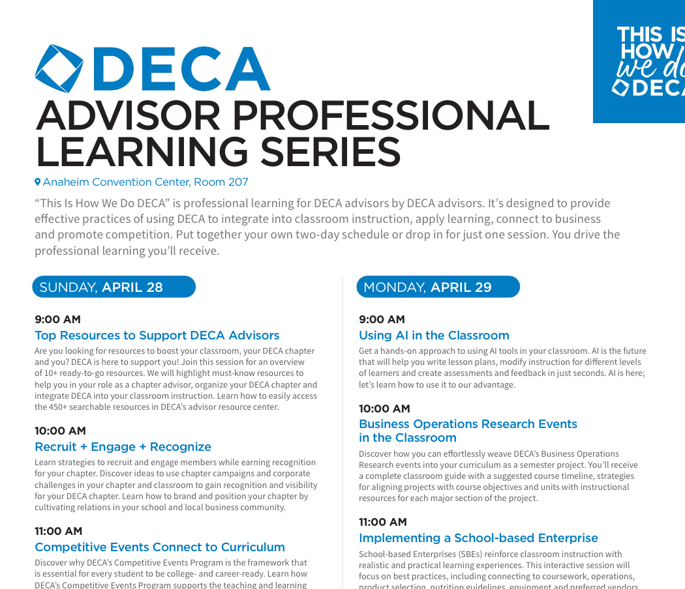
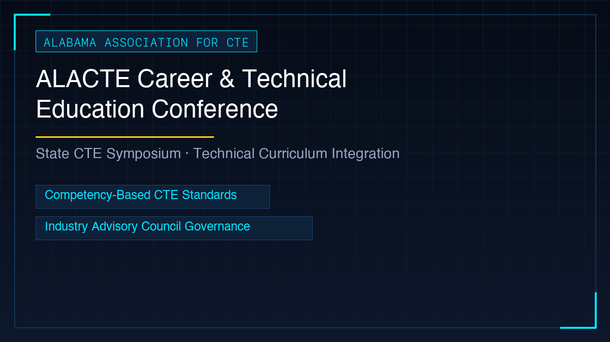
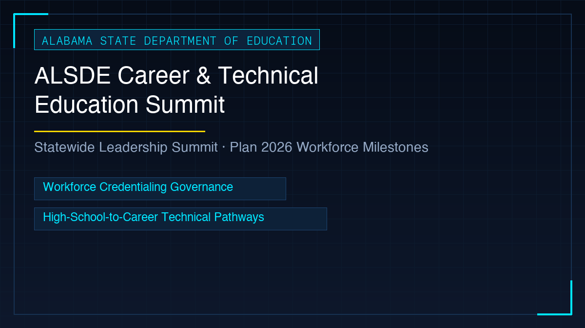
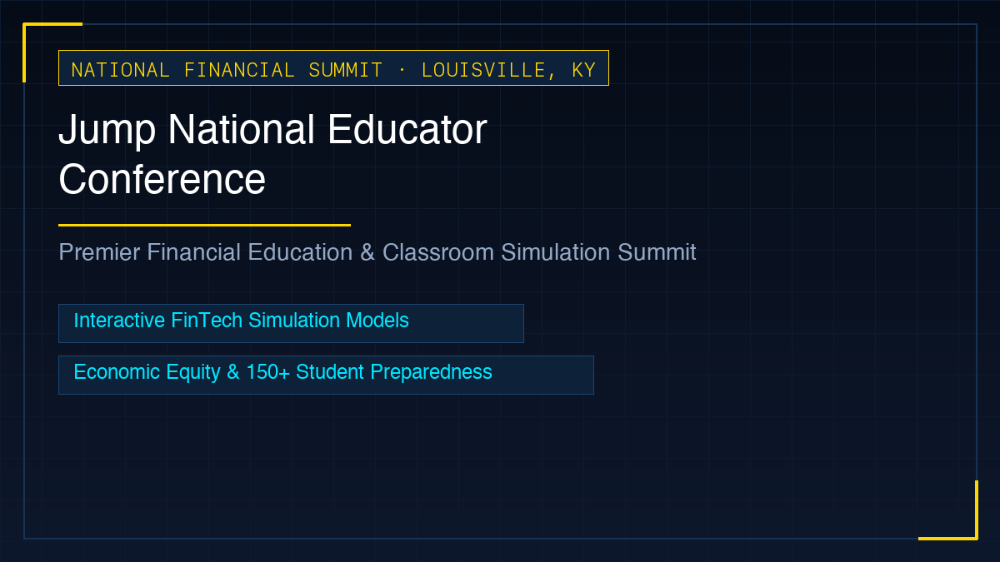
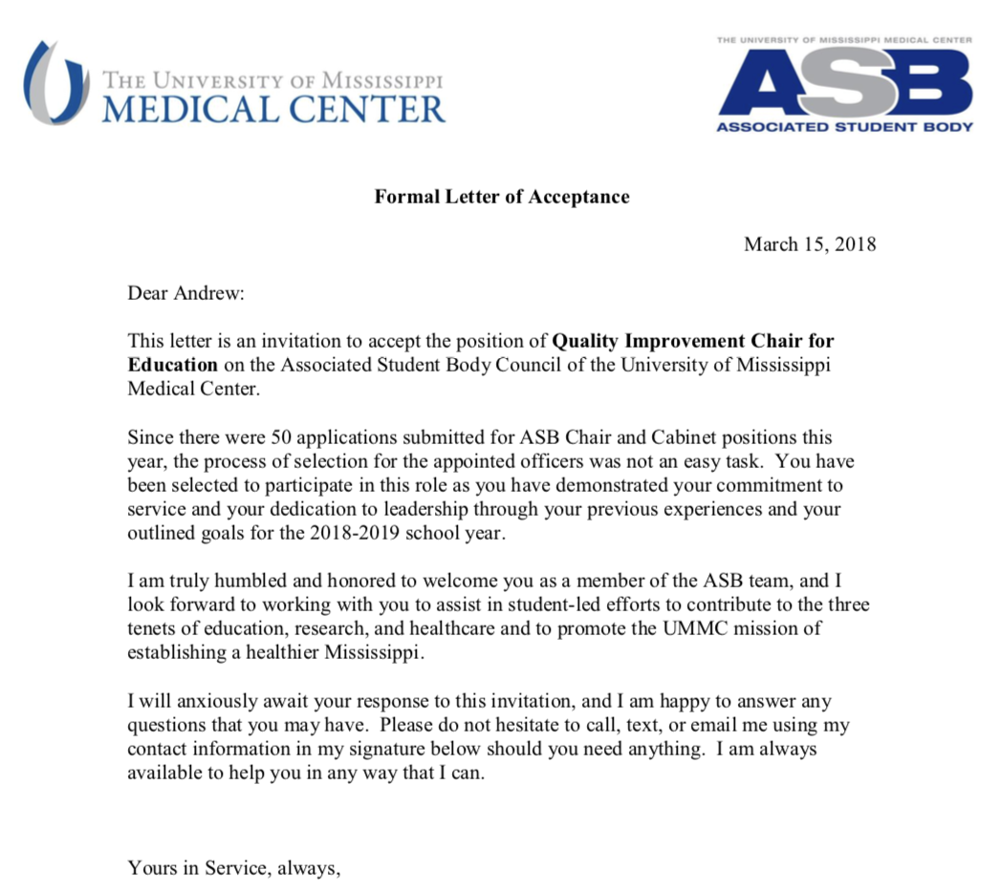
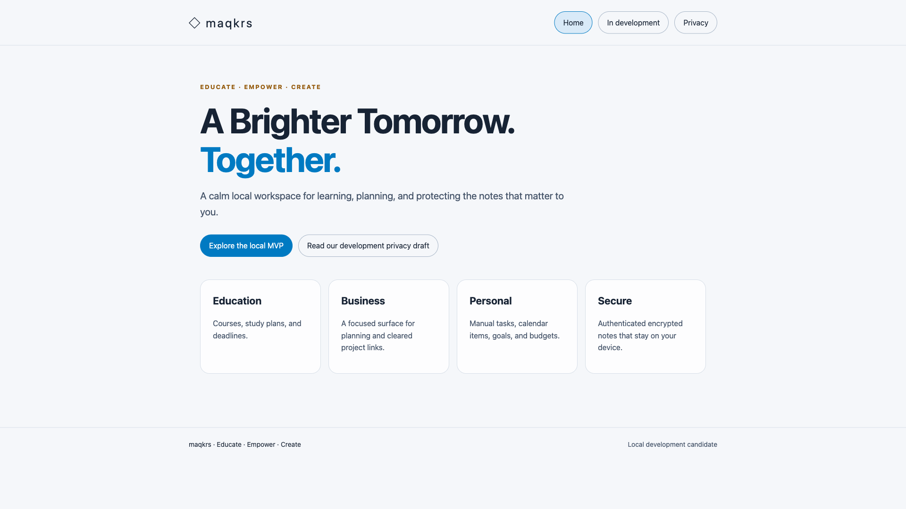

Andrew Strachan:
Cybersecurity Systems Engineer & Secure Systems Architect
M.S. Cybersecurity Candidate (GPA 3.75) · University of Alabama at Birmingham
Dedicated to protecting national security and critical digital infrastructure. Bridging zero-trust systems engineering, on-device artificial intelligence, and pharmaceutical cGMP regulatory compliance with award-winning technical education leadership.
Interactive Resume & Technical Profile
Candidate credentials evaluated through interactive technology. Filter competencies across technical domains, review chronological milestones, and inspect verified STAR accomplishment evidence.
Andrew Strachan
CyberCorps: Scholarship for Service (SFS) Scholar | Clearable · Information Security Analyst
Location: Birmingham, Alabama · Academic Contact: strachan@uab.edu · Maintained eligibility requirements for federal employment; fully prepared to undergo Tier 3 / Tier 5 background investigations (SF-86 track) upon agency sponsorship.
Academic Record & Degree Verification
University of Alabama at Birmingham — M.S. Cybersecurity
M.S. in Cybersecurity · GPA: 3.75 / 4.0 · NSF CyberAICorps SFS Scholar
Dates: January 2026 – Present (Expected Graduation: Dec 2027) · NSF CyberCorps SFS Scholar.
Key coursework: CS 623 Network Security, CS 646 Blockchain & Cryptography, CS 636 Threat Modeling, CS 532 Cloud Computing.
University of Montevallo — CTE Business & Finance
Teaching Field (PCTF): Business & Finance · GPA: 3.75 / 4.0
Dates: August 2024 – May 2025 · ALSDE Certified CTE Educator — Provisional Certificate in a Teaching Field (PCTF): Business, Marketing, and Finance.
Focus: Managerial finance, enterprise risk frameworks, curriculum engineering, and Alabama TAPE standards.
Mississippi College — B.S. ACS Biochemistry (Honors)
B.S. ACS Biochemistry Honors · GPA: 3.5 / 4.0
Dates: Aug 2011 – May 2016 · American Chemical Society Certified.
Honors: Senior Class Senator, Symphonic Band Principal Horn, Phi Mu Alpha Sinfonia co-founder, Delta Epsilon Iota Academic Honor Society, pre-medical rigor.
Medical & Life Sciences Foundation
Doctor of Medicine (M.D.) Candidate — 4 Years Coursework & Clinical Clerkships Completed (Incomplete as of 2020)
Dates: January 2016 – July 2020 · Eligible for readmission with advanced standing.
Honors: Human Anatomy Prosector, President & Founder: P.A.L.S. (Peer-Assisted Learning Society); President: Quality Improvement Student Interest Group; Chair: UMMC/MBN Opioid Crisis Council; BCLS / ACLS / First Aid Certified; Virginia Covington Award.
Filterable Technical Competency Matrix
Chronological Professional Work History
- Instructed middle school students in fundamental Python programming concepts, data structures, and algorithmic logic.
- Guided students to program BBC micro:bit microcontrollers to interface with sensors, LED matrices, and external robotics.
- Mentored students in writing custom Python flight trajectory scripts for aerial drones, demonstrating physical computing and hardware-software integration.
- Instructed Business Finance, Customer Service, and Sales in the school’s premier National Academy of Finance (NAOF) program.
- Served as official Chapter Adviser for the state's largest student career and technical business organization.
- Head Coach for the Esports Team; organized fundraisers and secured corporate sponsorships.
- Maintained 100% compliance with Alabama State Department of Education TAPE instructional standards.
- Awarded the 2025 JEFCOED Technology Torchbearer Award for Excellence for innovative classroom technology integration.
- Founded, chartered, and advised a new DECA chapter, introducing competitive business leadership opportunities to the student body (DECA Chapter Founder & State Competition Coach).
- Mentored and coached students in marketing and business finance simulations, culminating in 1st-place and 2nd-place state finishes at the 2024 Alabama DECA Career Development Conference.
- Delivered experiential curriculum in financial software, personal finance, and entrepreneurship.
- Honored with the 2024 Alabama DECA New Chapter Advisor Recognition.
- Directed operations for the establishment of a state-licensed, cGMP-regulated botanical and medical processing facility.
- Authored a comprehensive, audit-ready library of Standard Operating Procedures (SOPs) spanning hazardous extraction, QA/QC testing, and employee hygiene.
- Embedded with PhD analytical chemists and engineers to execute detailed process hazard and workflow analyses.
- Secured complex state and municipal permits with 100% first-pass regulatory audit compliance.
- Provided strategic operational consulting on FDA, ISO, and cGMP compliance frameworks for regional startups.
- Engineered custom digital operations: cloud hosting, web platforms, marketing funnels, and licensing pipelines.
- Mentored students in work-based learning across vulnerability scanning and zero-trust configuration checklists.
- Developed, evaluated, and led onboarding and training curricula for incoming sales cohorts across life and health divisions.
- Partnered with compliance leadership to engineer micro-training modules reducing customer complaints and raising client retention.
- Awarded the Top Sales Award (2021).
- Served as a certified health volunteer executing global health interventions and preventive medicine outreach in rural communities.
- Provided sustained youth leadership and civic mentorship, organizing community outreach and development activities.
Measurable Accomplishments (STAR Methodology)
Task: Deploy experiential business software curriculum and prepare students for competitive business events.
Action: Introduced interactive spreadsheet simulation models and mentored the state's largest student business chapter.
Result: Honored by the Jefferson County Board of Education with the 2025 Technology Torchbearer Award.
Task: Charter a new DECA chapter and train students for statewide competition.
Action: Coached weekly business judging simulations, analyzing market financial case studies.
Result: Students earned 1st-place and 2nd-place state trophies at the 2024 Alabama DECA Career Development Conference.
Task: Author audit-ready Standard Operating Procedure library prior to inspection.
Action: Synthesized complex extraction protocols into 30+ SOPs with PhD analytical chemists.
Result: Passed all state audits on the first pass with 100% compliance and zero citations.
Task: Build an interactive 3D WebGL simulation demonstrating cryptographic primitives.
Action: Engineered Sanctum in Godot 4 WebGL, integrating real-time SHA-256 block hashing.
Result: Live AWS CloudFront deployment with 720p 30fps web previews and permanent course adoption.
Task: Architect a native macOS AI study tool with zero network egress.
Action: Engineered SwiftUI app with local quantized Gemma 4 and SQLite vector retrieval.
Result: Presented at UAB CS Spring Showcase (ACM & WiT) with sub-second local retrieval and 100% privacy.
Task: Build serverless file exchange with cryptographic signature expiration.
Action: Implemented AWS S3, DynamoDB, and Lambda generating 15-minute expiring HMAC tokens.
Result: Zero unauthorized access vulnerabilities and automated S3 lifecycle garbage collection.
Career Research & Future Outlook
Rigorous labor market investigation for the chosen career pathway: Information Security Analyst & Cybersecurity Systems Engineer, substantiated by official U.S. Bureau of Labor Statistics (BLS) data, federal compensation scales, and industry challenge analysis.
Target Career: Information Security Analyst & Secure Systems Architect
Information Security Analysts plan, engineer, implement, and monitor defensive security measures to protect computer networks, cloud architectures, and digital assets. Aligned with the National Initiative for Cybersecurity Education (NICE) Workforce Framework categories: NICE PR-CD-001 (Cyber Defense Analyst) NICE SP-ARC-002 (Security Architect).
Official BLS Economic Research & Job Outlook (SOC 15-1212.00)
| Earning Tier / Percentile | Annual Wage (USD) | Hourly Equivalent | Professional Context & Title |
|---|---|---|---|
| Lowest 10% | $69,310 | $33.32 / hr | Junior Security Analyst / Associate SOC Analyst |
| 25th Percentile | $89,040 | $42.81 / hr | Cyber Defense Analyst / Network Security Specialist |
| 50th Percentile (Median) | $120,360 | $57.87 / hr | Information Security Analyst / Incident Responder |
| 75th Percentile | $152,430 | $73.28 / hr | Senior Security Systems Engineer / Threat Modeler |
| Highest 10% (Top Decile) | $182,370+ | $87.68+ / hr | Principal Security Architect / Federal Technical Lead |
Industry Obstacles & Engineering Mitigations
Quantum computer scalability threatens RSA and ECC asymmetric encryption, enabling 'harvest now, decrypt later' adversary tactics against federal systems.
Adversaries deploy autonomous LLM agents that discover zero-day bugs, synthesize polymorphic malware, and evade traditional firewall rules.
National SCADA, healthcare, and educational IT systems face sophisticated ransomware cartels targeting unsegmented legacy networks.
Career-Related Education
Academic coursework, research projects, and business education applied to real systems, accompanied by detailed analysis of their direct impact on Andrew's future cybersecurity career.
UAB Cybersecurity Graduate Coursework
Department of Computer Science (CS 623, CS 646, CS 636, CS 532)
Advanced graduate studies in Network Security, Blockchain & Cryptography, Computer Security Threat Modeling, and Cloud Computing Architecture.
STRIDE Threat Modeling Portfolio (CS 636)
Enterprise Systems Security Architecture & Attack Boundary Deconstruction
Authored structured Level 0 and Level 1 Data Flow Diagrams (DFDs) analyzing attack vectors across BlazerNET enterprise network and IoT camera endpoints.
University of Montevallo CTE Business Education
Provisional Certificate in a Teaching Field (PCTF) — Business, Marketing & Finance
Completed graduate education in managerial accounting, economic forecasting, curriculum engineering, and Alabama TAPE governance standards (GPA 3.75).
Mississippi College ACS Biochemistry & UMMC Medicine
Honors Baccalaureate & Clinical Sciences Foundation (Master Prosector)
Four years of preclinical medical coursework, clinical clerkships, master cadaveric dissection, and ACS-certified biochemistry laboratory protocols.
Professional Development (2023–2025)
Conferences, technical symposia, specialized certifications, community service leadership, and experiential professional achievements across 2023–2025.
Conferences, Symposia & Community Leadership
Sun Herald Feature: GiveGab Youth Mentorship & Shelter Support
Featured in the Sun Herald for spearheading regional community volunteering and youth advocacy across Harrison County, coordinating mentorship to support vulnerable youth in emergency shelter care.
Opioid Crisis Council at UMMC & Youth Shelter Advocacy
Collaborated on medical and crisis mitigation initiatives at the University of Mississippi Medical Center (UMMC), addressing community healthcare interventions, harm reduction, and supporting Harrison County’s emergency youth shelter as a safe space for children in crisis.

DECA International Career Development Conference (ICDC)
Completed the DECA Advisor Professional Learning Series ("This Is How We Do DECA") at Anaheim Convention Center, Room 207. Mentored rural high school students from new chapter inception to 1st and 2nd place state podium finishes, qualifying for internationals.

ALACTE Career & Technical Education Conference
Participated in the Alabama Association for Career and Technical Education (ALACTE) annual conference, exploring cutting-edge technical curriculum integration, student certification pipelines, and industry advisory council development.

ALSDE Career & Technical Education Summit
Engaged in the Alabama State Department of Education (ALSDE) statewide CTE leadership summit, focusing on Alabama Plan 2026 educational milestones, workforce credentialing governance, and high-school-to-career technical pathways.

Jump$tart National Educator Conference (Louisville, KY / Kentucky Derby Leadership)
Completed intensive professional learning at the premier Jump$tart National Financial Education Conference in Louisville, KY (Kentucky Derby region), mastering interactive classroom financial simulation tools, FinTech curriculum design, and adaptive executive leadership.

UMMC ASB Quality Improvement Chair for Education
Appointed as Quality Improvement Chair for Education by the Associated Student Body (ASB) Executive Council at the University of Mississippi Medical Center. Directed student-faculty academic feedback loops, clinical curriculum quality audits, and institutional continuous improvement initiatives.
NonArtificial Superintelligence (Web3 & Decentralized AI)
Architecting decentralized intelligence infrastructure and sovereign AI systems at NonArtificial Superintelligence, integrating high-assurance cryptography, Web3 domain registry protocols, and autonomous agent verification models.
Federal Career Execution & Public Service Milestones
51-Position Federal Opportunity Tracker
Documented in accurateinternshiptracker.xlsx: tracks positions across Dream Tier (White House OSTP, ONCD, USDS), National Labs (Sandia TITANS, Los Alamos CAI, Oak Ridge), and Defense (U.S. Army Space & Missile Defense Command, Redstone Arsenal, CISA).
14 SFS Virtual Job Fair Applications
Submitted tailored applications to 14 premier federal intelligence, defense, and civilian agencies: U.S. Space Force, CISA, MARFORCYBER, DOJ CCIPS Cyber Crime Lab, CBP Cyber Threat Intelligence, and Sandia National Laboratories.
International Humanitarian Service
OmniMed Certified Village Health Volunteer (Uganda, East Africa). July 2017 – August 2017. Established 2 mobile clinics serving 1,000+ rural patients; U.S. Department of State Benjamin A. Gilman International Scholarship in Pokhara, Nepal conducting hospital clinical service and educational broadcasts for Reach the World.
Youth STEM Drone & Python Mentoring
Teaching Assistant for UAB Python Summer Camp (June 2026), instructing middle school students in algorithmic coding, BBC micro:bit microcontrollers, and autonomous aerial drone trajectory programming.
Special Skills & Verified Credentials
Five curated special skills strictly correlated to the federal cybersecurity mission, anchored by an official Credly-verified Microsoft Certified Educator (MCE) digital credential and 30 verified LinkedIn Learning certifications.
Microsoft Certified Educator (MCE)
Issuer: Microsoft Corporation & Certiport · Issued May 16, 2025 · Verified via Credly
Validates technology literacy and pedagogical competencies needed to architect custom learning environments. Proves Andrew's ability to design enterprise cybersecurity awareness programs, conduct federal workforce upskilling, and translate technical security controls into operational standards.
Verify Credly Badge (Public URL)Top 5 Specialized Skills Aligned to Federal Mission
1. Secure Systems & Zero-Trust Architecture
Credential: NSF CyberCorps SFS Scholarship & M.S. Cybersecurity (GPA 3.75)
Enforces OMB M-22-09 zero-trust directives through STRIDE threat modeling, packet inspection (Wireshark), port auditing (Nmap), and defense-in-depth principles.
2. Educational Technology & Instructional Design
Credential: Microsoft Certified Educator (Credly Verified) & Alabama PCTF
Architects technical security training programs, translates technical controls into standard operating procedures, and trains non-technical agency personnel.
3. On-Device AI & Privacy-Preserving Systems
Credential: Native Apple Silicon (MaqkrsTutor2) & 30 Professional AI Certs
Prevents sensitive data egress by deploying local RAG architectures, quantized Gemma 4 models, and hardware-accelerated inference via Apple MLX.
4. Cloud Infrastructure & DevSecOps Engineering
Credential: CS 532 Cloud Systems & Multi-Cloud Production Deployments
Architects least-privilege AWS/GCP/Firebase environments with expiring HMAC token verification, Docker isolation, and automated CI security gates.
5. Regulatory Compliance & Quality Systems
Credential: MidSouth Extracts Operational Director & Laboratory Specialistship & cGMP SOP Library
Bridges technical cybersecurity controls with legal and regulatory mandates, applying pharmaceutical cGMP discipline to federal GRC and digital forensics.
Directory of 30 Verified LinkedIn Learning Professional Certifications
All 30 certifications have been verified live (HTTP 200) matching recipient identity and course curricula across Agentic AI, Cloud Core Services, and AI Governance.
Interactive Media & 28+ Project Showcase
Explore Andrew's real technical body of work. Inspect embedded 10-second web video previews with dual MP4/WebM formats, followed by a verified live directory of 28+ cloud-hosted applications.
Curated Highlight Projects with Video Previews
CS646 Sanctum 3D Memory Palace
Gamified Cryptographic Distributed Ledger Environment
Interactive 3D exploration world featuring 5 distinct districts, procedural hover traversal, and real-time SHA-256 block hashing demonstrations.
MaqkrsTutor2 (Local AI Study Assistant)
Native Apple Silicon Local RAG Study Assistant
Native assistant indexing documents and code for semantic query retrieval with 0 network egress, guaranteeing 100% privacy and institutional IP security.
AdaptivePrep & AdaptiveHS Learning Portal
Full-Stack K-12 Homeschool Learning Management Platform
Full-stack homeschool portal aligned with Georgia Standards of Excellence (GSE). Features multi-role dashboards for parents, students, and educators.

MaQkRs OS Command Center & Planner
Executive Dashboard & Multi-Agent Operations Console
Unified operational command center providing real-time telemetry across multi-agent workflows, business financials, and project sprint schedules.
Directory of 28+ Verified Live Project Deployments
Every project link below is live-checked (HTTP 200) across AWS CloudFront, Firebase Hosting, Vercel, and Lovable platforms.
CS646 Sanctum 3D World (AWS)
AWS CloudFront · Godot WebGL
Primary 3D memory palace exploring cryptographic consensus.
CS646 Sanctum (Firebase Fallback)
Firebase Hosting · WebGL
Alternative high-availability node for the Sanctum 3D world.
CS646 Blockchain Study Hub
Firebase Hosting · React
Permanent course portal for Dr. Yuliang Zheng's curriculum.
CS646 Midterm Review Portal
Firebase Web App · Single Page
Cryptographic lexicons, study guides, and flashcards.
Quantum Universe 3D Dashboard
Firebase Web App · Three.js
Cyber-themed spatial operations console with live nodes.
MaQkRs OS Command Center
Firebase Hosting · React 19
Multi-agent business operations and schedule dashboard.
AdaptivePrep K-12 Platform
Cloud Run · Next.js 15
Homeschool portal aligned with Georgia GSE standards.
AdaptiveHS Demo Simulation
AWS CloudFront · Static Export
Static walkthrough simulation of homeschool role dashboards.
Project Atlas 3D Portfolio
AWS CloudFront · Spatial Storytelling
Scroll-driven canvas architecture with interactive case studies.
Coastal Speech Co.
Firebase Hosting · React
Clinical practice web platform for Panama City, FL speech clinic.
Victorious Herbal Elements
Vercel · Next.js Storefront
Client botanical product catalog and checkout workflow.
Networking Universe (CS 334/534)
Firebase Hosting · 3D Visualizer
Interactive 3D network topology and packet routing simulation.
CS 623 Network Security Hub
Firebase Hosting · Markdown Hub
Course resource platform for firewalls and network defense.
Switch MAC Address Learning
Firebase Hosting · Interactive Canvas
Interactive Layer 2 switch forwarding table simulator.
Networking Midterm Guide
Firebase Web App · Deep Link
Intensive study guide with 33 question variant modules.
CS 334/534 Study Resources
Firebase Web App · Static Hub
Static reference platform organizing network exam guides.
CS 423/623/723 Practice Test
Firebase Hosting · 200-Q Test
Network security examination engine testing defense-in-depth.
Network Security Demos
Firebase Hosting · State Engine
Interactive firewall, proxy, and access control list (ACL) demos.
Cyber Risk Management (NIST)
Firebase Hosting · NIST Portal
UAB risk study hub mastering NIST SP 800-30 and CSF.
CS 203 OOP Study Hub
Firebase Hosting · Code Snippets
Java OOP guide covering inheritance and encapsulation.
CS 203 Practice Question Bank
Firebase Hosting · Question Bank
Interactive Java OOP drill examining object reference models.
CS 203 OOP Exam Simulator
Firebase Web App · Timed Simulator
Timed exam simulator grading complex Java programs.
CS 203 Code Output Analysis
Firebase Web App · Deep Path
Diagnostic tool testing student ability to trace Java code.
CS 203 Exam 1 Practice Test
Firebase Web App · Practice Test
Practice test covering loops, class inheritance, and types.
Computer Security Companion
Lovable App · AI Study Tool
Interactive AI companion for CS 436/636/736 computer security.
Cybersecurity Study Guide
Firebase Hosting · Question Engine
Question variant generator covering security fundamentals.
Andrew Strachan GitHub
GitHub · Developer Profile
Open source repositories, systems scripts, and academic tools.
Microsoft Credly Badge
Credly Verification Platform
Official Microsoft Certified Educator digital badge verification.
Sources & Provenance Ledger
Full audit trail substantiating every factual claim, credential, labor statistic, and code artifact against professionally legitimate authorities (BLS, NIST, NSF, Microsoft Credly).
Authoritative Citations & Federal References
- U.S. Bureau of Labor Statistics (BLS): Occupational Outlook Handbook: Information Security Analysts. Data release 2024–2026. https://www.bls.gov/ooh/computer-and-information-technology/information-security-analysts.htm (SOC 15-1212).
- National Center for O*NET Development: 15-1212.00 – Information Security Analysts. O*NET OnLine. Sponsored by USDOL/ETA. https://www.onetonline.org/link/summary/15-1212.00.
- National Science Foundation (NSF): CyberCorps: Scholarship for Service (SFS) Program Guidelines. Directorate for STEM Education. https://new.nsf.gov/funding/opportunities/cybercorps-scholarship-service-sfs and https://www.sfs.opm.gov/.
- National Institute of Standards and Technology (NIST): Security and Privacy Controls for Information Systems and Organizations. NIST SP 800-53, Rev. 5. https://csrc.nist.gov/publications/detail/sp/800-53/rev-5/final.
- Microsoft Corporation & Certiport: Microsoft Certified Educator (MCE) Digital Badge Verification. Credly Digital Credential Platform. https://www.credly.com/badges/d4e5c326-c255-405c-b50e-0a369d6fc3a0/public_url.
- Harrison County Youth Outreach & Giving Community: Harrison County Community Support Initiatives. https://www.sunherald.com/news/local/counties/harrison-county/article97803862.html.
- South Mississippi Emergency Youth Shelter & Healthcare Outreach: Harrison County Emergency Youth Shelter & UMMC Council. https://www.wlox.com/2018/12/12/south-mississippi-strong-harrison-countys-emergency-youth-shelter-gives-safe-space-children-need/.